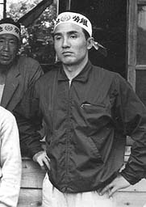
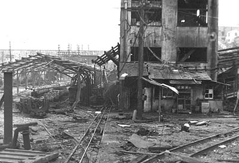

三川鉱炭塵大爆発 ー 柳田さんからの聞き取り
（聞き取り年月日場所：2008年7月7日 荒尾市）

柳田秀吉さん、大正14年生まれ。鹿児島県大島郡与論町出身。現在熊本県荒尾市在住。
昭和20年1月10日、柳田さんは西部第18部隊速射砲中隊に入隊。同年3月23日、同部隊を出発して、アメリカ軍が上陸すると
考えられた鹿児島県川辺郡川辺町の吹上浜に到着した。上官より「本土決戦が近くこの辺りである。したがって、敵の上陸に備えて
これから塹壕掘りをする。ここがお前達の死に場所だ」と言われながら塹壕掘りに従事。そして8月15日、同所で終戦を迎えた。21歳
のときだった。
復員後の昭和21年1月22日、柳田さんは福岡県大牟田市にあった三井三池鉱業所三川鉱に坑内運搬工として入社。通称・八Ｔ（ハチトン）
電車を運転する仕事に就いた。
昭和22年に同じ与論町出身の女性と結婚すると、新港町6番地にあった港務所社宅二区13棟4号を与えられ、母と兄、そして自分たち
夫婦4人での生活が始まった。当時は、狭い炭鉱住宅での2世帯や3世帯同居はめずらしくなかったという。その後一旦、会社からの転居
通達により、熊本県荒尾市にあった緑ヶ丘社宅桂町にわずかな期間移り住んだこともあったが、昭和24年8月から再度、新港町6番地の
三川鉱社宅一区に移り住み、定年退職する昭和55年12月まで同社宅で住み続けたという。
柳田さんは最後まで三池労組員だった。しかし、そのことが災いして、昭和35年11月に終わった三池闘争後、三池労組員であることを
理由に坑内電車の運転から降ろされ、ボタ石を貨車に積み込むだけの単純かつ重労働に回された。「だから自ら希望して、払採炭工へ職場
を変わった」という。
そんな経過を経ての昭和38年11月9日午後3時頃、大変なことが起きた。
一番方で出勤する日、柳田さんは奥さんから、「昨夜は夢見が悪かったけん、あんた、きょうは仕事へは行かんほうがよかよ」と言われ
たので、仕事を休んだという。そして、その日の午後3時頃、「ドーン！」という大音響と共に家が揺れるのを感じた。それが三川鉱炭塵
大爆発だった。
近所の奥さんが青ざめた顔をして家に来た。「仕事に行っているうちの主人が心配だけん、様子を見に行ってもらえんやろか」。柳田
さんは三川鉱へ飛んで行った。
すると、会社の係員から「なんか、あんたはきょうは休みだったんか」と言われ、「ちょっと具合が悪かったけん、休みました」と返答
すると、「そんならちょうどよか、今から着替えて救援隊に加わってくれんね」と頼まれて、爆発から約3時間後、柳田さんは救援隊と
して三川鉱第一斜坑へ下がることになった。
そのとき最初に目にした光景は、斜坑に取り付けられていたレールが、ブラーン、ブラーンと宙に浮いたようになっていた様子だった
という。爆発で排水パイプが破損し、水が坑内へ逆流してレールの敷石が押し流されたためだった。そして、逆流した水が土石流のよう
になって坑内へ流れて行った。柳田さんはさらに、その坑内で凄惨な光景を見ることになる。

土砂に埋まった人、人、また人たちの姿。土砂から手だけを突き出した人。足だけを突き出した人。頭だけを突き出した人。ハラワタ
をパイプにぶら下げて死んでいる人。坑内電車に座ったまま死んでいる人もいた。柳田さんはその惨状に驚き、「足がガタガタと震え、
しばらく前へ進めなかったほどだ」と話す。
「1人、2人と、70人目まで死体の数を数えていったが、もうそれ以上は数え切れなかった」とも。
ある場所へ来たとき、身体半分を土砂に埋め、「フー、フー」と大きな息をしながらうつろな目をした人を見つけた。「しっかりしろ」
と声をかけながら皆でその人を掘り起こし助け出したが、しばらくすると「ワー！！」と言いながら突然暴れ出した。皆で必死に押さえ
つけ担架に縛りつけて地上まで運んだという。
そういった生きている人を先に救出して、坑口から水平坑道までの約2700メートルの距離を二往復したという。
しかし、どうしても最後の1人が見つからなかった。爆発から3、4日目のとき、後片付けを兼ねた捜索中、六目貫（坑口から約2500メー
トルの所）で腰掛けて腹ごしらえをしているときのことだった。「同僚が弁当のめしを箸でつかんで口元へ持っていこうとするのだが、
どうしてもそれ以上手が動かない。何度しても同じだった。『おかしいな、どうしたんだろう』と思っていると、今度は背中の下が引っ
張られるような感じがした。服が何かに引っ掛かったのだろうかと、座っている位置を少しずらしたその時だった。座っていた尻の下に、
人が埋まっているのが判った。それが最後までどうしても見つけ出すことが出来なかった、仕繰夫の広沢修功さん（当時46歳）で、同じ
新港町の三川鉱社宅の人だった」と語る。「これは作り話じゃなかよ。実話たい。『おーい、俺はここにいるぞ』と、最後まで見つけて
もらえなかった広沢さんが我々に知らせたんやろうね」と柳田さんは言う。
広沢さんは、人望があり組合から推されて市会議員をしていたが、現場に復帰して間もなくの事故遭遇だった。
柳田さんが住んでいた新港町社宅では、同災害による死者は30名。その内訳は、三池労組12名、新労15名、職労2名、組夫（三新工業）
1名。広沢さんは三池労組に所属していた。
後年、柳田さんは採炭工の時、炭壁をもろにかぶって腰骨を折る大けがをし、機械工に変えてもらって定年を迎えた。その間、職員2名
と第二組合に脱落した同僚2人から「新労に来んね」と言われたこともあったが、拒否し続けてきたという。奥さんも言う。「回りの多く
が第二組合に脱落して行ったが、私も第二へ行きたいなどというようなことは一度も思わなかった。今でも、夫が第二組合へ行かなくて
よかったと思っている」と。何が二人をそうこだわらせたのか。息子さんが言う。「自分の信念を貫き通した両親を誇りに思う」と。
その親を思う息子さんのひと言が全てを語っているように思えた。
（まえかわ）
BACK
|